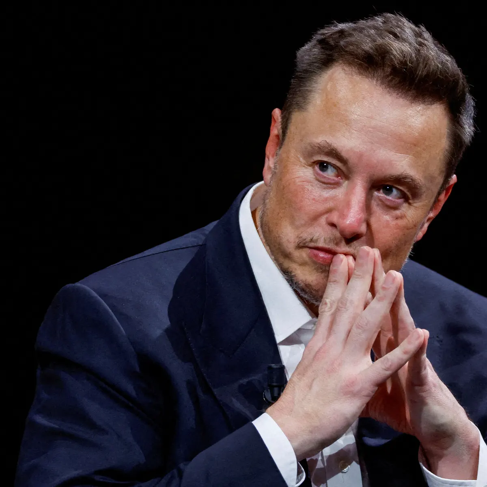

Elon Musk
Elon Musk is a visionary entrepreneur and business magnate. He is the CEO and lead designer of SpaceX, CEO and product architect of Tesla, Inc., and co-founder of several other companies. Musk is known for his ambitious goals and groundbreaking work in the fields of space exploration, electric vehicles, and renewable energy.
Here are some key achievements of Elon Musk:
- Founded SpaceX in 2002 with the goal of reducing space transportation costs and enabling the colonization of Mars.
- Co-founded Tesla Motors in 2003, which has revolutionized the automotive industry with electric vehicles.
- Founded SolarCity in 2006 to promote solar energy systems.
- Co-founded Neuralink in 2016, a company focused on developing brain–machine interface technologies.
- Co-founded The Boring Company in 2016 to address traffic congestion through the construction of underground transportation tunnels.
- Musk expressed interest in buying Twitter as early as 2017,[207] and had questioned the platform's commitment to freedom of speech.
Elon Musk's innovative and ambitious approach has had a profound impact on various industries, making him one of the most influential figures of our time.